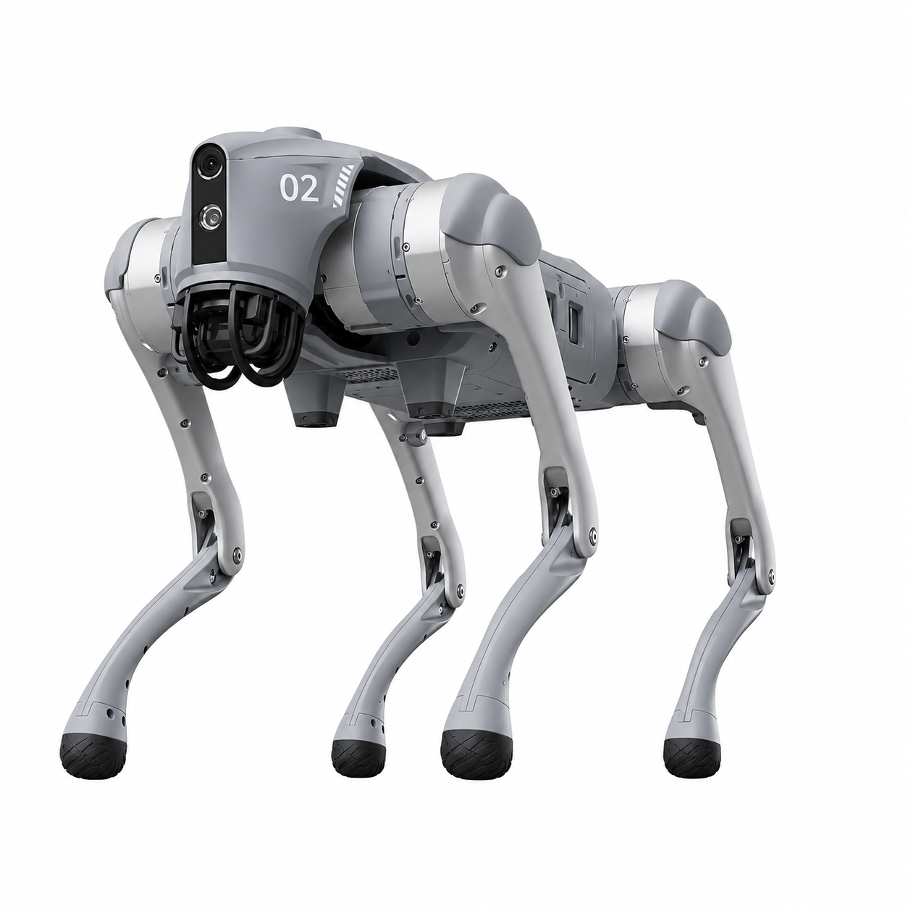

프로그램 사이의 정보 전달
ROS 2 · 노드 · 토픽ROS 2는 센서 처리, 위치 추정, 경로 계획 등 여러 프로그램을 연결합니다. 각각의 실행 단위를 노드라고 하며, 노드들은 토픽을 통해 센서 데이터나 이동 속도 같은 정보를 주고받습니다.
SLAM 기초가 부족한 전공자가 환경을 준비하고, 조종기로 지도를 만든 뒤 저장 지도에서 Nav2 주행을 실습하는 안내입니다. 이미 지도가 있다면 Mapping을 건너뛰고 같은 주행 단계로 합류합니다.
Unitree Go2 EDU의 L1 LiDAR와 D435i 관측, Go2가 제공하는 이동 정보를 실행 컴퓨터에서 처리합니다. RTAB-Map은 지도 작성과 저장 지도 위치 추정을, Nav2는 목적지까지의 경로와 이동 속도 계산을 담당합니다.
실행 컴퓨터는 노트북 또는 서버입니다. Mapping과 수동 180° 회전은 운영자가 Go2 조종기로 수행합니다. 현재 확인된 경로는 창학관 3층의 연구실 ↔ 교수님 방 문앞이며, 초기 위치와 소구간 목표 지정에 운영자가 개입합니다.

기존 운영자의 주행 기록입니다. 새 Conda 설치나 개입 없는 자동 왕복의 검증 결과와 구분합니다.
ROS 2는 센서 처리, 위치 추정, 경로 계획 등 여러 프로그램을 연결합니다. 각각의 실행 단위를 노드라고 하며, 노드들은 토픽을 통해 센서 데이터나 이동 속도 같은 정보를 주고받습니다.
Go2의 내장 L1 라이다는 주변 물체까지의 거리를 점들의 집합인 포인트클라우드로 제공합니다. D435i는 컬러 영상과 깊이 정보를 제공합니다. 지도 작성과 위치 추정, 장애물 인식에 이 정보를 사용합니다.
SLAM은 로봇의 위치 추정과 지도 작성을 함께 수행하는 기술입니다. 이 프로젝트는 RTAB-Map을 사용해 센서 관측과 이동 정보를 연결하고, 지도와 관련 관측을 DB 파일로 저장합니다.
Localization은 저장된 지도와 현재 센서 관측을 비교해 로봇의 위치와 방향을 찾는 과정입니다. 자율주행은 기존 지도 기반 위치 추정 모드로 진행합니다. 지도 속 위치가 실제 로봇과 맞아야 경로와 장애물도 올바르게 해석할 수 있습니다.
Odometry는 짧은 시간 동안 로봇이 얼마나 이동하고 회전했는지 추정한 정보입니다. 이 프로젝트는 Go2가 제공하는 이동 정보를 사용합니다. TF는 지도(map), 이동 기준(odom), 몸체(base_link), 센서의 좌표 관계를 연결해 서로 다른 데이터를 같은 위치에 표시합니다.
Nav2는 목적지까지의 경로 계획과 주행 제어를 담당합니다. NavFn은 지도에서 목적지까지의 전역 경로를 만들고, DWB는 가까운 장애물과 경로를 고려해 짧은 시간의 이동 후보를 평가하고 전진·회전 속도를 선택합니다.
Costmap은 공간을 격자로 나누고 장애물과 주변 영역에 이동 비용을 부여한 지도입니다. Global Costmap은 전체 경로를 계획할 때, Local Costmap은 로봇 주변의 주행을 판단할 때 사용합니다. 실시간 센서 관측을 반영해 갱신합니다.
Footprint는 경로와 충돌을 판단할 때 사용하는 로봇의 평면 외곽 모델입니다. Inflation은 장애물 주변에도 비용을 부여해 여유를 두도록 유도합니다. 좁은 문이나 코너에서는 두 설정이 주행에 영향을 주며, 설정한 외곽과 실제 보행 중 다리가 차지하는 범위는 따로 확인해야 합니다.
RViz2는 지도, 센서 관측, 로봇 위치, Costmap, 계획 경로를 함께 보여주는 도구입니다. 초기 위치나 목적지를 입력할 때도 사용합니다. 화면에 경로가 표시되는 것과 실제 로봇이 목적지까지 주행을 완료하는 것은 별도의 확인 항목입니다.
Mapping은 새 지도 DB를 만드는 단계입니다. 주행은 저장된 지도를 기준으로 위치를 찾는 단계입니다. 주행 중 Nav2의 장애물 격자(Costmap)는 갱신되지만 RTAB-Map의 저장 지도를 계속 확장하지 않습니다.
Conda가 설치된 Ubuntu 22.04 x86_64 실행 컴퓨터와 프로젝트 저장소가 필요합니다. 아래 명령은 저장소가 ~/GH/unitree-go2-slam-nav2에 있는 경우입니다. 다른 위치라면 cd 경로를 실제 저장소로 바꿉니다.
실행 컴퓨터의 데스크톱에 로그인하고 터미널 A와 B를 엽니다. RViz2도 그 모니터에 표시됩니다.
이미 구성된 원격 데스크톱으로 실행 컴퓨터에 접속한 뒤 그 화면에서 터미널 A와 B를 엽니다. SSH를 사용한다면 아래처럼 화면 전달을 허용하고, 연결된 셸에서 실습합니다. 접속을 받는 SSH 서버와 로컬 X 화면 전달은 사전에 준비돼 있어야 합니다.
read -r -p "실행 컴퓨터 SSH 대상(user@host): " GO2_RUN_HOST
ssh -Y "$GO2_RUN_HOST"SSH로 터미널만 연결하면 GUI가 표시되지 않을 수 있습니다. 실행 셸에서 DISPLAY가 설정돼 있어야 합니다. 설치 sh는 원격 접속이나 호스트 네트워크를 설정하지 않습니다.
environment.json을 기준으로 기본 Conda envs 위치에 go2_nav2를 생성하고 의존성·Unitree 메시지·시각화·프로젝트를 설치·빌드·검증합니다. 설치는 실행 컴퓨터에서 수행합니다.
cd "$HOME/GH/unitree-go2-slam-nav2"
bash scripts/install_student.shgo2_nav2 환경 설정이 완료되었습니다.실패했다면 완료 문구가 출력되지 않습니다. 오류를 해결한 뒤 다시 실행합니다. 기존에 직접 만든 같은 이름의 환경은 자동으로 덮어쓰지 않습니다. 설치 계획만 보려면 bash scripts/install_student.sh plan을 사용합니다.
아래 블록을 두 터미널에서 각각 실행합니다. ip -brief link에 나온 인터페이스 중 실제 Go2에 연결한 이름을 입력합니다. ROS Domain ID는 현재 Go2 센서 설정과 같아야 하며 실험 담당자에게 확인합니다. 이 입력은 현재 셸에 적용되고 호스트 IP 설정을 바꾸지 않습니다.
cd "$HOME/GH/unitree-go2-slam-nav2"
conda activate go2_nav2
export RMW_IMPLEMENTATION=rmw_cyclonedds_cpp ROS_LOCALHOST_ONLY=0
ip -brief link
read -r -p "Go2에 연결한 인터페이스 이름: " GO2_NET_IFACE
read -r -p "Go2와 동일한 ROS_DOMAIN_ID: " ROS_DOMAIN_ID
export GO2_NET_IFACE ROS_DOMAIN_ID
export CYCLONEDDS_URI="<CycloneDDS><Domain><General><Interfaces><NetworkInterface name=\"$GO2_NET_IFACE\"/></Interfaces></General></Domain></CycloneDDS>"bash scripts/student_session.sh check정상 결과: INSTALL CHECK PASS. 이는 Conda Python·ROS 패키지·메시지·플러그인 확인이며 센서나 위치 정합 검증은 아닙니다. student_session.sh는 설치 후 실행 도우미이고 실제 Mapping·Nav2는 기존 run_mapping.sh·run_nav.sh에 연결됩니다.
Go2에는 기존 ~/ros2_realsense_456_ws/activate.bash가 준비돼 있어야 합니다. 카메라가 이미 정상 송출 중이면 중복 실행하지 않고 C4로 진행합니다. 새로 시작할 때만 실제 Go2 접속 대상을 입력합니다.
read -r -p "Go2 카메라 SSH 대상(user@host): " GO2_SSH_TARGET
export GO2_SSH_TARGET
bash scripts/student_session.sh camera터미널 A는 카메라 실행을 유지합니다. 이 SSH 대상은 실행 시 입력이며 Conda 설치 설정에 포함되지 않습니다. 실습 중 카메라 터미널을 닫지 않습니다.
Go2 전원과 센서 연결이 준비된 상태에서 확인합니다. 아래 검사는 RGB·정렬 깊이·카메라 정보·L1 포인트클라우드·native odometry 수신을 확인합니다.
bash scripts/student_session.sh sensors정상 결과: JSON의 status가 PASS. BLOCKED이면 누락·오래된 토픽과 중복 실행 노드를 확인합니다. 수신 성공은 센서 시각·TF·실제 위치 정합을 보증하지 않습니다.
이 단계는 새 지도가 필요할 때만 수행합니다. DB 파일명은 매번 새로 만들며 기존 파일이 있으면 sh가 덮어쓰기를 거부합니다. 실행 후 RViz2·rtabmap_viz의 지도 생성 상태를 보면서 Go2 조종기로 이동합니다. 화면 조작은 5번 M1을 따릅니다.
export GO2_TEST_MAP="$HOME/go2_maps/practice_$(date +%Y%m%d_%H%M%S).db"
bash scripts/student_session.sh map "$GO2_TEST_MAP"원하는 구간을 기록했으면 Ctrl+C를 한 번 누르고 프로세스 종료·저장 검사가 끝날 때까지 기다립니다. quick_check: ok, 1개 이상의 nodes, Saved map DB:와 이번 DB 경로를 확인합니다. DB 내용의 실제 지도 품질은 화면에서 별도로 확인합니다.
GO2_TEST_MAP에 이번 DB가 들어 있으므로 같은 터미널 B를 사용합니다. 저장 실패·부분 DB가 보고되면 Nav2로 진행하지 않습니다.지도가 이미 있다면 M1을 건너뜁니다. 현재 장소의 원본 DB 절대 경로를 입력합니다. 새 Mapping을 마친 경우에는 이 단계를 건너뛰어 이번 지도 경로를 유지합니다.
read -e -r -p "기존 지도 DB의 절대 경로: " GO2_TEST_MAP
export GO2_TEST_MAP
printf "선택한 지도: %s\n" "$GO2_TEST_MAP"기존 창학관 3층 지도를 선택하면 연구실 ↔ 교수님 방 문앞 실험을 재현할 수 있습니다. 새 지도에서는 그 지도에 해당하는 목표를 선택합니다.
새로 저장했거나 E1에서 선택한 같은 지도를 사용합니다. 원본 DB를 주행 세션 폴더로 복사한 후 Localization·Nav2·RViz2를 실행합니다. Mapping과 Nav2를 동시에 실행하지 않습니다.
bash scripts/student_session.sh view "$GO2_TEST_MAP"출력의 Original map과 Nav session map copy를 구분합니다. 주행 bridge는 비활성입니다. RViz2에서 지도와 실제 위치를 비교하고 5번 N1~N2에 따라 초기 위치를 설정합니다. 지도만 보인다고 다음 주행 단계로 넘어가지 않습니다.
RViz2의 로봇 위치·방향, 센서가 그리는 벽과 지도 벽, 장애물과 Costmap이 맞는지 확인합니다. 상태를 추가로 볼 때는 C2와 같은 환경을 준비한 별도 점검 터미널에서 실행합니다.
bash scripts/student_session.sh health상태 검사는 조종기나 실제 장면 관측을 대신하지 않습니다. 어긋난 위치·끊긴 TF·오래된 센서가 있으면 원인을 해결한 뒤 진행합니다. 점검이 끝나면 별도 터미널을 정리하고 B로 돌아갑니다.
위치 확인이 끝나면 터미널 B의 view를 Ctrl+C로 종료하고 아래 sh를 실행합니다. student_session.sh는 주행을 비활성으로 고정하므로 실제 주행은 기존 run_nav.sh에 명시적으로 허용 값을 전달합니다.
GO2_ENABLE_MOTION=true bash scripts/run_nav.sh "$GO2_TEST_MAP"Nav2가 다시 시작되므로 목표 지정 전에 초기 위치·방향과 Costmap을 다시 확인합니다. 그다음 RViz2에서 작은 목표를 하나씩 지정하고 도착을 확인합니다. 현재 소스의 상한은 전진 0.5 m/s, 회전 1.8 rad/s이며, 0.5 m/s 동적 보행 외곽·제동거리 검증은 남아 있습니다. 운영자가 조종기를 준비한 상태에서 실습합니다.
기존 지도 예시는 연구실 → 교수님 방 문앞입니다. 현재 확인된 방식대로 소구간 목표를 반복 지정합니다. 도착 후 Nav2의 180° 회전은 성공이 확인되지 않았으므로 자동 방향 전환으로 안내하지 않습니다.
세션마다 ~/go2_maps/nav_sessions/ 아래에 주행용 DB 복사본과 diagnostics가 남습니다. 원본 지도는 보존합니다. 위 기동·종료 연결 절차의 새 Conda 실물 검증은 아직 미실행입니다.
| 증상 | 확인·대응 | 돌아갈 단계 |
|---|---|---|
| 완료 문구가 없음 | 설치 로그의 첫 오류 확인. 설치 성공을 가정하지 말고 원인 해결 후 설치 sh 재실행. | C1 |
| 환경을 활성화하라는 오류 | 현재 터미널에서 go2_nav2 활성화와 저장소 경로 확인. 시스템 /opt/ros overlay를 섞지 않음. | C2 |
| Offline interface / 센서 BLOCKED | 실제 연결 인터페이스, Go2와 같은 Domain ID, 카메라 터미널과 누락 토픽 확인. | C2~C4 |
| RViz2 창이 안 열림 | 직접 데스크톱 또는 원격 GUI 연결과 DISPLAY 확인. SSH 화면 전달이 없으면 원격 데스크톱 사용. | C0 |
| DB already exists / 저장 검사 실패 | 기존 DB 보존. 새 파일명으로 다시 Mapping하고 저장 성공을 확인. | M1 |
| 목표를 지정해도 움직이지 않음 | view는 주행 비활성. 위치 확인을 마친 뒤 운영자가 N3을 실행했는지 확인. | N1~N3 |
| 지도와 로봇 위치가 어긋남 | 목표를 지정하기 전에 2D Pose Estimate와 센서·TF 정합 재확인. | 5번 N1~N2 |
| 도착 후 180° 회전 실패 | 현재 알려진 한계. 조종기 회전과 복귀 절차 사용. | N4 |
4번의 단계 번호와 연결해서 봅니다. 기본 RViz 설정은 nav.rviz이며 초기 위치와 Nav2 목표 도구를 포함합니다.
| 단계 | 화면·도구 | 조작 | 확인할 결과 |
|---|---|---|---|
| C0 | 직접 / 원격 화면 | 실행 컴퓨터의 데스크톱 또는 GUI 전달 화면에서 창이 열리는지 확인. | 단순 SSH 셸만 열고 RViz2 화면을 기대하지 않음. |
| M1 | Mapping 화면 | 조종기로 이동하며 로봇 이동과 새 벽·공간이 지도에 반영되는지 확인. rtabmap_viz는 Mapping용 별도 GUI. | 저장 직전 지도 내용과 실제 공간 비교. Ctrl+C 저장 후 N1로 이동. |
| N1 | Fixed Frame / 지도 | Displays의 Global Options에서 Fixed Frame이 map인지 확인. 지도가 현재 장소인지 확인. | 설정 파일은 map 사용. 좌표·지도 오류가 있으면 주행 보류. |
| N1 | 2D Pose Estimate | 실제 위치를 지도에서 누른 뒤 Go2가 바라보는 방향으로 드래그하고 놓음. 현재 운용에 포함된 수동 보정. | 표시된 로봇 위치·방향이 실제와 맞는지 확인. |
| N2 | 센서 / TF / Costmap | 지도 벽과 센서 벽, map → odom → base_link 연결, 가까운 장애물의 위치를 비교. | 초기 위치 정합과 좁은 문 통과 가능성을 별도로 판단. |
| N3 | 실제 주행 모드 재시작 | N3 sh 실행 후 초기 위치와 Costmap을 다시 확인. 이후 Nav2 Goal 도구로 가까운 목표 위치와 방향 지정. | 목표 성공을 확인한 뒤 다음 작은 목표 지정. 계획 경로 표시만으로 주행 성공으로 기록하지 않음. |
| N4 | 도착 / 조종기 회전 / 복귀 | 도착 후 Nav2 종료·정지 확인 → Go2 조종기로 수동180° 회전 → 같은 지도 Nav2 재실행 → 초기 위치 재확인 → 복귀 목표 지정. | 현재 개입이 필요한 절차를 기록. 무개입 자동 왕복으로 표현하지 않음. |
실행 코드, 과거 소스 검사, 운영자의 실제 주행 관측을 구분합니다. 사용한 영상과 2026-11-12 로그는 기존 실험 환경의 근거입니다.
| 항목 | 근거·상태 | 확인 내용 |
|---|---|---|
| 창학관 3층 지도 | 운영자 보고 | 사전 Mapping 지도 사용. 이번 Conda 실습에서 새로 생성한 결과는 아님. |
| 연구실 → 교수님 방 문앞 | 운영자 보고 + 기존 로그 | 2D Pose Estimate 후 소구간 목표를 반복 지정하여 주행. |
| 교수님 방 문앞 → 연구실 | 운영자 보고 + 기존 로그 | Go2 조종기 수동180° 회전 후 소구간 목표로 복귀. 2026-11-12 21:29:05 최종 Goal SUCCEEDED. |
| 환경 설치 코드 | 소스 확인 | environment.json 단일 기준, Conda go2_nav2 생성·빌드·검증, 전체 성공 후 완료 문구. |
| 설치 계획·소스 회귀 | 기존 검사 PASS | Conda dry-run58명세/927패키지. 기존 native ROS에서 회귀126개 통과, 그중 설치·진입21개. 새 Conda 컴파일 결과와 구분. |
| 새 Conda 실제 실습 | NOT TESTED | 환경 생성·소스 빌드·GUI·센서·Mapping·실물 주행 미실행. |
| 무개입 자동 왕복 | FAIL · 기존 운용 기준 | 초기 위치·목표 지정·도착 후 회전에 수동 개입이 남음. |
지금 가능한 실습 절차와 앞으로 해결할 동작을 구분합니다. 미검증 결과를 PASS로 올리지 않습니다.
| 항목 | 현재 상태 | 개선·확인 방향 | 확인 기준 |
|---|---|---|---|
| Conda 실제 배포 | 새 환경의 컴파일·GUI 실행은 미검증 | 설치 sh를 실제 실행하고 환경 내부 패키지·GUI·센서를 순서대로 확인. | 설치 성공 로그와 실제 실행 관측 |
| Mapping → Nav2 연결 | 현재 sh는 저장 후 다음 명령을 안내하고 종료 | 이 문서는 Ctrl+C 저장 확인 후 같은 GO2_TEST_MAP을 다음 sh에 전달. 자동 연결은 미구현. | 이번 DB가 선택됐고 원본과 세션 복사본이 구분됨 |
| 초기 위치 자동 정합 | 현재 2D Pose Estimate 수동 보정 사용 | 센서·시각·map → odom → base_link를 독립적으로 분석. | 수동 초기 위치 없이 실제 위치·방향 정합 |
| 180° 회전 | 도착 후 Nav2 회전 실패, 원인 미확정 | 실제 관측·Costmap·TF·후보 궤적과 명령을 비교. | 동일 위치에서 운영자 감독 하 반복 성공 |
| 문 통과 여유 | 70×36cm Footprint, 1cm padding, Local20/Global30cm inflation은 축소 설정 | 실제 다리 스윕·회전·제동 외곽과 90cm 문 여유 확인. | 0.5m/s 동적 외곽의 실물 근거 |
| 연결·복구 | 카메라 단절·재연결 반복 복구는 남은 확인 | 수신·시각·위치 회복과 세션 로그 비교. | 반복 시험에서 복구 조건과 실패 기록 확보 |
| 아이디어 | 기대 효과 | 필요한 조건 |
|---|---|---|
| 초보자 실습 진입점 통합 | 단계별 명령과 터미널 조작 부담 감소 | 현재 저장·실패·중복 실행 조건을 보존하면서 별도 sh 변경 논의 |
| 초기 위치·방향 전환 개입 감소 | 운영자 개입 없는 전체 미션에 접근 | 위치 자동 정합과180° 회전 원인의 독립 검증 |
| Waypoint 미션 구성 | 소구간 목표를 묶어 반복 실험 | 개별 목표·회전 검증 후 실패 시 중단·취소 동작 확인 |
| 직접·원격 실습 결과 비교 | 다른 실행 컴퓨터에서도 절차 재현 | GUI 전달·네트워크·센서 지연과 실제 실행 근거 확보 |